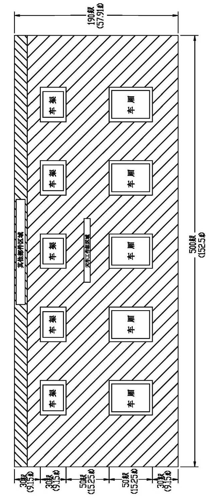

Порядок сборки на месте
Порядок сборки на месте
Описание
Поскольку обычно не получается перевести карьерный самосвал целиком из-за большого собственного веса и огромного объема. Как правило, сборка некоторых компонентов карьерного самосвала осуществляется на заводе-изготовителе, поставка автомобиля осуществляется в разобранном виде, окончательная сборка и испытания осуществляются после доставки автомобиля в карьер.
Существует несколько методов сборки карьерного самосвала, отличающихся видом применяемого при сборке оборудования, размещением персонала и рядом факторов. Действия данного положения распространяется наиболее часто используемый процесс сборки. Только внесены некоторые другие изменения на основе данного порядка.
Подготовка
Следует заранее составлять план приема и сборки карьерного самосвала до доставки его до места сборки. В данном плане должна содержаться следующая основная информация:
Требования к монтажному персоналу
Требования к инструментам
Требования к сварочному оборудованию
Требования к месту производства работ
Требования безопасности
Монтажный персонал
В состав рабочей группы по сборки включены следующие участники:
1 руководитель, отвечающий за управление рабочей группой, имеющий опыт управления крупным оборудованием.
1 или несколько опытных крановщиков.
3 опытных сварщика, отвечающие за сборку кузова и крепления кронштейнов.
3 слесаря/электромонтажника, имеющие опыт сборки крупных компонентов.
1 человек, имеющий опыт сборки электрических, механических, гидравлических/пневматических компонентов, который справляется с работой, касающейся устранения неисправностей систем и проведения испытаний систем.
Требования к инструментам
В состав комплекта инструментов должен быть включены следующие инструменты:
Специальные инструменты
Раздвижные ключи: 12, 18 и 24 дюйма (300, 450 и 600 мм)
Трубные клещи:
Стальные клещи: 12-18 дюйма (300-450 мм)
Алюминиевые клещи: 24-36 дюйма (600-900 мм)
Молоты: 8, 12 и 16 фунтов (3,5, 5,5 и 7 кг)
Пневматические ключи:
1/2 дюйма, с торцевыми головками 3/8-1-1/2 дюйма
3/4 или 1 дюйма, с торцевыми головками от 1-1/2 до 2-1/2 дюйма
Различные регулировочные рычаги (18-24 дюйма) (450-600 мм)
Ряд ломиков
Динамометрические ключи:
1/2 дюйма
3/4 или 1 дюйм с минимальным крутящим моментом 500 фут-фунтов (680 Н.м)/максимальным крутящим моментом 1000 фут-фунтов (1360 Н.м)
Усилитель крутящего момента 18:1
Сварочное оборудование
3 сварочных аппарата постоянного тока 300А (минимум), с проводом 100 футов (31 м) (желательно использовать сварочный аппарат постоянного тока 600А)
2 комплекта оборудования для воздушно дуговой строжки угольным электродом
2 комплекта сварочных горелок для резки/нагрева с рядом сопел
1 сушильный шкаф для сварочных электродов
3 пневматических обрубочных молотка
2 тяжелые шлифовальные машины и различные шлифовальные круги 5-9 дюйма (125-225 мм)
Различные упорные клинья и зажимные приспособления
Подъемное оборудование
1 подъемный кран грузоподъемностью 100 тн (90 мт)
1 подъемный кран грузоподъемностью 50 тн (45 мт)
1 вилочный погрузчик/подъемный кран грузоподъемностью 10 тн (9 мт)
Различные подъемные канаты и U-образные зажимы
1 ручная таль грузоподъемностью 3 тн (3 мт)
1 силовой узел или домкрат грузоподъемностью 10 тн (9 мт)
Другое оборудование
1 набор опорных подставок переднего и заднего мостов
1 набор различных тяжелых деревянные шпал (может использоваться вместо опорных подставок)
1 переносное устройство для подкачки с достаточно длинным шлангом 100 куб. футов/мин (минимум).
Контрольно-измерительное оборудование
2 цифровых вольтметра-омметра
2 гидравлических манометра с диапазоном измерений 0-5000 фунтов/кв. дюйм (0-35000 кПа)
1 мегомметр 1000В
Требования к месту производства работ (см. рис. 1)
Место сборки должно быть чистым, сухим и относительно ровным, оно должно иметь достаточное пространство для снятия всех компонентов вокруг рамы. Если количество карьерных самосвалов, подлежащих сборки, превышает одну единицу, то следует рационально разместить раму для облегчения попеременного использования инструментов, оборудования и рабочей силы и более легкого доступа при сборке. Убедиться в отсутствии проводов или других препятствий на рабочем месте и наличии достаточного пространства для обеспечения удобства и безопасности управления подъемным краном и другим оборудованием.
Оставлять ровную площадку для сборки, сварки и установки кузова. Следует оставлять достаточное пространство для опрокидывания в процессе сварки.
Требования безопасности
Перед началом работы следует с другими работниками вместе ознакомиться с требованиями безопасности к карьеру, месту производства работ и другими требованиями безопасности и порядком проведения операций. Это сведет к минимуму возможные проблемы.
Сборка кузова
ПРИМЕЧАНИЕ: Конструкция кузова обычно разделен на две части с целью облегчения перевозки и сборки.
1. Подготовить подходящую просторную производственную/сборочную площадку. Она должна иметь достаточно пространство для размещения всех компонентов и позволять кузову вращаться и опрокидываться целиком.
2. Удалить все фиксированные сварные точки.
ПРИМЕЧАНИЕ: Серийный номер составных частей кузова должна быть одинаковым.
3. Определить массу компонентов, использовать подходящие подъемные краны и подъемные канаты. Для получения более подробной информации о массе этих компонентов необходимо обратиться к упаковочному листу или сотруднику ОАО «NHL».
4. Отдельно разместить две половины кузова на поверхности цементобетонного покрытия/металлической поверхности или шпалах, приварить пол, переднюю стенку и направляющий стержень защитного козырька кузова в единое целое.
5. При размещении кузова в противоположенном направлении следует ставить борта попарно, присоединить болтами, но не нужно затянуть. Подтянуть две половины кузова друг к другу с помощью ручной тали, закрепленной к внутренней стенке борта.
6. Установить пластину 3×12 дюйма ×4 футов (75×300 мм×1,2м) или подобную пластину под защитным козырьком кузова для уменьшения вероятности повреждения в процессе опрокидывания. Ставить остальные детали на брус или металлический лист для облегчения перемещения этих деталей в процессе сборки. Совместить две половины кузова друг с другом путем перемещения их по поверхности цементобетонного покрытия/металлической поверхности или шпалам.
Рис. 1. Типичное место сборки
7. Зафиксировать с помощью штырей, убедиться в надлежащей сообности. Более подробная информация о сообности приведена на схеме сборки кузова.
ПРИМЕЧАНИЕ:
1. Необходимо вставить одну трубу через центральные отверстия четырех штырей, перевести данную трубу вместе с кузовом.
2. Соосность отверстий штырей должна быть не более 1/16 дюйма (1,5 мм), диаметр вышеуказанной трубы должен составлять 5,950 дюйма (151 мм), длина должна быть не менее 90 дюйма (2,3 м).
8. Подтянуть все части вместе, из которых состоит пол. Затянуть болты, держать V-образный паз и пол в створе. При затягивании установочных болтов убедиться в надлежащем расстоянии между центрами штырей и наличии возможность свободного вращения трубы в центральных отверстиях штырей.
ПРИМЕЧАНИЕ: Держать их в створе с помощью ряда ломиков, клиньев или зажимных клещей. Незначительно обрабатывать или отполировать по мере необходимости.
9. После плотного сопряжения пола и центровки штырей совместить переднюю стенку и защитный козырек.
ПРИМЕЧАНИЕ: Имеется V-образный паз С внутренней стороны или внешней стороны передней стенки. Он обычно располагается с внешней стороны. Совместить переднюю стенку для обеспечения взаимного горизонтального положения. В то же время следует совместить защитный козырек.
10. Совместить передний край защитного козырька и закрепить зафиксировать электросваркой.
ПРИМЕЧАНИЕ: Если составные части защитного козырька не могут быть совмещены, то это обычно вызвано опущением при погрузке, разгрузки и укреплении в процессе доставки автомобиля из производственного цеха до карьера. Эта проблема может быть исправлена клином и подобными инструментами.
11. После совмещения переднего края защитного козырька затянуть болты защитного козырька и передней стенки. Убедиться в том, что он находятся в одной плоскости.
12. После затягивания болтов повторно проверять состояние совмещения центров штырей. Убедиться в наличии возможности свободного вращения трубы в центральных отверстий штырей.
13. После затягивания всех болтов и доведения до требуемой соосности приварить одну расширительную трубу диаметром 3 дюйма (75 мм) с внутренней стороны двух половин кузова. Это позволяет уменьшить напряжение на сварочный валик при поворачивании кузова.
ПРИМЕЧАНИЕ: В рядовом случае следует заказать данную трубу вместе с карьерным самосвалом, она поставляется вместе с кузовом.
14. В процессе сварки необходимо следовать требованиям данной инструкции, указанным в части 200 - «Дополнение - порядок подварки на месте». Все размеры сварных соединений показаны на схеме сборки кузова.
ПРИМЕЧАНИЕ: При температуре окружающей среды ниже 50℉ или 10℃ необходимо соблюдать требования к выполнению сварочных работ в суровых климатических условиях.
15. Все сварочные зоны должны быть чистыми, свободными от ржавчины и пыли. Рекомендуется очистить путем удаления лакокрасочных покрытий сжиганием или с помощью щетки или шлифовального круга.
16. При необходимости приварить соединительные элементы ко всем несущим балкам, приварить центральную зону между двумя несущими балками. Отполировать V-образный паз с помощью шлифовального круга или малого устройства для газовой строжки.
ПРИМЕЧАНИЕ:
1. Убедиться в наличии возможности свободного вращения трубы в центральных отверстиях штырей в процессе сварки.
2. При сварке V-образного паза с внутренней стороны передней стенки отполировать V-образный паз 3/16 дюйма (4 мм), требуется полная сварка паза. При сварке паза снять соединительный болт и уголок.
3. При сварке защитного козырька приварить V-образную зону или пруток в соответствии с требованиями, указанными на схеме, при сварке паза снять соединительный болт и уголок, приварить вертикальный шов защитного козырька и отполировать его надлежащим образом. Перед опрокидыванием кузова завершить все работы, касающиеся сварки пола.
17. Опрокидывать кузов.
ВАЖНОЕ ПРИМЕЧАНИЕ: Опрокидывание кузова перед/назад является наиболее безопасным. Опрокидывание кузова влево/вправо часто приводит к выпуклости поверхности или деформации. В процессе опрокидывания следует принять необходимые меры по защите кузова. D-образное кольцо расположено с внутренней стороны пола и дает возможность облегчить процесс опрокидывания.
Рекомендуется использовать 4 подъемных каната; присоединить 2 подъемные каната к шарнирному валу, подготовить 2 трубы sch40 длиной 3 дюйма (75 мм), примерно равной расстоянию между двумя выступами. Закрывать оба конца трубы пробками с целью защиты трубы от соскальзывания. Обратить особое внимание на безопасность и контроль перемещения кузова.
Сначала поднимать подъемный канал, зацепленный за D-образное кольцо. Когда кузов находится над центром тяжести, подъемный канат, зацепленный за штырь, начинает воспринимать усилие и контролировать перемещение. Это может непосредственно опустить кузов на землю.
18. Подложить упорные клинья под кузов, держать пол и защитный козырек в горизонтальном положении.
19. Убедиться в том, что все сварные швы свободны от ржавчины, краски и других загрязнений.
20. Приварить V-образный паз пола. Отполировать или обрабатывать паз газовой строжкой до требуемого состояния сварки. Требуется полная сварка паза в полу. Шов должен быть примерно вровень с поверхностью пола, в частности следует обеспечить полноту сварочного валика при установке износоустойчивой пластины.
ПРИМЕЧАНИЕ: Необходимо подогревать область сварки.
21. Отполировать или обрабатывать шов защитного козырька и передней стенки газовой строжкой, варить их со 100% проваром корня шва.
22. После завершения сварки кузова установить накладку между защитный козырек и передним стенкой.
23. Установить козырек для защиты оператора от падающих кусков породы, как показано на схеме. Козырек для защиты оператора от падающих кусков породы расположен с одной стороны кабины.
24. Нанести грунтовку и краску на сварные швы и другие поврежденные поверхности, чтобы сочетать с исходным цветом. Краска входит в состав возимого комплекта ЗИП.
Подготовка к сборке
Действие при доставке компонентов и деталей до места:
1. Своевременно проверить их состояние и отметить степень повреждения, возникающего в процессе погрузки и транспортировки.
2. Контрольный осмотр при приемке производится согласно накладной или упаковочному листу.
3. Разместить снятые компоненты рядом с местом установки.
ПРИМЕЧАНИЕ:
1. Привязать к каждой сборочной единице два или несколько тросов во избежание случайного перемещения.
2. Подъемный кран должен быть центрирован с целью облегчения безопасного подъема рамы и перемещения на предварительно подготовленные подставки. Не допускается подъем рамы или других компонентов на чрезмерную высоту, превышение допустимой высоты может привести к угрозе безопасности.
3. Не допускается произвольный подъем колеса с электроприводом с помощью троса, закрепленного к наружной таре. Необходимо всегда использовать приспособление для подъема, предоставленное поставщиком колеса с электроприводом.
a. Разместить колесо с электроприводом в соответствующую сторону и вблизи корпуса моста.
b. Сначала следует разместить передний мост в сборе надлежащим образом, чтобы свести к минимуму высоту подъема рамы, поставить подставки высотой 12 дюйма (300 мм) под передний мост, чтобы поддерживать его в устойчивом состоянии в процессе установки.
c. Разместить топливный бак и гидробак в соответствующую сторону и вблизи к раме.
d. Подпирать площадку вблизи рамы подставками или шпалами, чтобы предотвращать повреждение нижней части.
ПРИМЕЧАНИЕ: Поднимать сборочную единицу с помощью специального подъемного ушка, расположенного в заднем углу перед площадкой. Рекомендуется распределить растягивающее усилие сборочной единицы с помощью плоской балки и т.д. При отсутствии плоской балки можно использовать 4 подъемных канала, длина каждого каната должна быть не менее 20 футов (6,5 м).
4. Действия при снятии рамы в сборе:
a. Подготовить подходящие подставки для подпирания рамы. Разместить один набор подставок под передний бампер или переднюю поперечину, затем разместить другой набор подставок на держатель гидроцилиндра подъема.
ПРИМЕЧАНИЕ: Нельзя высовывать подставки за раму во избежание негативного влияния на установку других компонентов.
b. Зацепить подходящие подъемный канат, U-образный зажим и другое оборудование за переднее подъемное ушко рамы. При необходимости установить предохранительное устройство подъемного каната во избежание царапин или повреждений компонентов, контактирующих с ним.
c. Если надежность крепления не доведена до требуемой нормы, то установить подъемное устройство во втулку штыря кузова, расположенную на хвостовой части рамы. Зафиксировать фиксирующий штифт шплинтом или другим подходящим прижимом.
ПРИМЕЧАНИЕ:
(1) Привязать трос к каждой сборочное единице с целью предотвращения случайного перемещения и обеспечения надежной фиксации.
(2) Подъемный кран должен быть центрирован с целью облегчения безопасного подъема рамы и перемещения на предварительно подготовленные подставки. Не допускается подъем рамы или других компонентов на чрезмерную высоту.
d. Медленно, осторожно и плавно поднимать раму с трейлера, пусть трейлер отъезжает, подложить подставки (в соответствии с правилами техники безопасности), медленно опустить раму на подставки. Перед расцеплением или снятием подъемного каната убедиться в нахождении рамы в достаточно устойчивом состоянии, позволяющем выполнить операции на ней.
Порядок сборки
ПРИМЕЧАНИЕ:
1. Перед установкой каждого компонента убедиться в отсутствии пыли, краски, ржавчины, повреждений или примесей или неровности на посадочных поверхностях компонентов и рамы или других сборочных единиц.
2. Привязать трос к каждой сборочной единице с целью предотвращения случайного перемещения и обеспечения надежной фиксации.
3. Подъемный кран должен быть центрирован с целью облегчения безопасного подъема и перемещения компонентов в соответствии с установленными требованиями. Не допускается подъем кузова или других компонентов на чрезмерную высоту.
Сборка автомобильной техники производится в следующем порядке:
1. Установка переднего моста в сборе производится в следующем порядке (более подробная информация приведена в части 070 - «Ходовая система»):
a. Поднимать раму и плавно переместить ее на передний мост.
b. Сначала установить два нижние тяги.
(1) Сдвинуть тягу, установить пылезащитное кольцо надлежащим образом.
(2) Установить фиксирующий штифт тяги.
ПРИМЕЧАНИЕ: Следует использовать фиксирующий штифт общего назначения. Эксцентриковый палец только используется в установленном месте, указанной в последующем разделе.
(3) Установить прижим пальца, зафиксировать с помощью болта и шайбы.
c. Установить левую верхнюю тягу.
d. Установить правый верхнюю тягу.
ПРИМЕЧАНИЕ: Эксцентриковый палец используется при установке верхней тяги. Совместить отверстие в пальце с отверстием в раме, установить эксцентриковый палец. Приварить прижим к выступам рамы и переднего моста угловым швом 1/4 дюйма (6 мм).
2. После завершения установки переднего моста, зафиксировать раму/передний мост в сборе на подставках, чтобы облегчить установку колеса с электроприводом, шин с ободьями в сборе.
3. Установить шины с ободьями в сборе на передние колеса в соответствии с порядком, указанным в части 070 - «Ходовая система». В процессе сборки убедиться в надлежащей установке стержня вентиля на стык колеса. Установить ободья на колеса, затянуть гайки прижимов шин.
4. Монтировать колесо с электроприводом в соответствии с порядком, указанным в части 070 - «Ходовая система».
5. Установить двойные шины с ободьями в сборе с обеих сторон колеса с электроприводом в соответствии с порядком, указанным в части 070 - «Ходовая система». В процессе сборки убедиться в надлежащей установке стержня вентиля на стык колеса. Установить ободья на колеса, затянуть гайки прижимов шин.
6. Довести давление в каждой шине до 6 бар (87 фунтов/кв. дюйм) или обратиться к поставщику шин за консультацией.
7. Поднимать раму в соответствии с вышеуказанным порядком, убрать подставки.
ПРИМЕЧАНИЕ: В рядовом случае следует поднимать оба конца карьерного самосвала с помощью двух подъемных кранов грузоподъемностью 75 тн или больше, убрать подставки, затем опустить его до момента соприкосновения шин с поверхностью земли.
8. Установить защитные ограждения на площадку в соответствии с порядком, указанным в части 020 - «Конструктивные элементы».
9. Установить воздушный фильтр двигателя в соответствии с порядком, указанным в части 040 - «Силовая система».
10. Установить защитный козырек и брызговик в сборе на посадочные места на площадке в соответствии с требованиями, указанными в каталоге деталей.
11. Установить левое и правое зеркал заднего вида в сборе.
12. Снять защитный кожух и защитная решетка в сборе в соответствии с порядком, указанным в части 020 - «Конструктивные элементы».
13. в соответствии с порядком, указанным в части 020 - «Конструктивные элементы», Установить площадку на раму. В процессе сборки следует начать затяжку ряда болтов только после установки всех болтов, затем затянуть заданным моментом. Приложить и присоединить все кабели, проводы и шланг. Более подробная информация приведена в каталоге деталей.
14. Повторно установить защитный кожух и защитную решетку в сборе в соответствии с порядком, указанным в части 020 - «Конструктивные элементы».
15. Установить лестницу площадки в соответствии с порядком, указанным в части 020 - «Конструктивные элементы».
16. Установить все впускные и выхлопные трубы двигателя в соответствии с требованиями, указанными в каталоге деталей, прилагаемом к карьерному самосвалу.
17. Установить топливный бак в соответствии с порядком, указанным в части 020 - «Конструктивные элементы». В процессе сборки убедиться в надлежащем натяжении всех крепежных ремней и правильном присоединении всех топливопроводов.
18. Установить подушки кузова в сборе в соответствии с порядком, указанным в части 020 - «Конструктивные элементы».
19. Присоединить и проверить все топливопроводы, проводы и кабели.
20. Отремонтировать и наполнить все компоненты в соответствии с порядком технического обслуживания карьерного самосвала, указанным в части 200 - «Дополнения».
a. Отремонтировать цилиндры передней и задней подвески в сборе в соответствии с порядком, указанным в части 070 - «Ходовая система».
b. Очистить трубопроводы автоматической системы смазки и проводить первоначальную регулировку.
21. Проводить испытания электрической системы в статическом режиме в соответствии с требованиями инструкции, предоставленной ОАО «NHL».
22. Проводить испытания механических систем в соответствии с порядком проведения испытаний нижеследующих систем, указанными в инструкции по ремонту:
a. системы рулевого управления, указанной в части 050 - «Гидравлическая система»
b. системы подъемы, указанной в части 050 - «Гидравлическая система»
c. тормозной системы, указанной в части 050 - «Гидравлическая система»
23. После завершения соответствующих операций, за исключением сборочных единиц кузова и кузова, присоединить ряд компонентов в соответствии с порядком, указанным в части 020 - «Конструктивные элементы». После завершения присоединения отрегулировать подушку с помощью регулировочных прокладок.
24. Очистить и распылить краску на поверхность, подлежащую обработке.
25. Убедиться в надежной фиксации всех шлангов, жгутов проводов и кабелей во избежание случайного перемещения или царапин.
26. Завершить сборку карьерного самосвала.
Испытания
Испытания карьерного самосвала производятся в следующем порядке:
1. Не допускается проведение испытаний автомобильной техники до завершения сборки кузова.
ПРИМЕЧАНИЕ: Перед приведением в действие карьерного самосвала следует притереть фрикционные тормозные накладки в соответствии с порядком, указанным в части 080 - «Тормозная система».
2. Проводить испытания пробегом в соответствии с требованиями инструкции ОАО «NHL» и поставщика, и другими требованиями к двигателю или системе привода в карьерных эксплуатационных условиях.
3. Проверить состояние передних колес в соответствии с порядком, указанным в части 070 - «Ходовая система». Отрегулировать схождение по мере необходимости.
4. в соответствии с порядком, указанным в части 070 - «Ходовая система» Повторно проверить момент затяжки гаек прижимов шин, входящих в состав шины передних и задних колес с ободьями в сборе.
5. Проверить и отрегулировать подушки кузова в соответствии с требованиями к кузову, указанными в части 020 - «Конструктивные элементы».
6. Повторно проверить уровень наполнения цилиндра подвески в ненагруженном состоянии и отрегулировать в соответствии с установленными требованиями.
Дополнения – порядок сборки на месте
200-0030
Дополнения – порядок сборки на месте
200-0030
6
7
Дополнения – порядок сборки на месте
200-0030
1
Дополнения - Масса компонентов
200-0090
Дополнения - Масса компонентов
200-0090
28
29
Дополнения - Масса компонентов
200-0090
Зона для других компонентов
Рама
Рама
Рама
Рама
Рама
Кузов
Кузов
Кузов
Кузов
Кузов
500 дюйма (152,5 м)
50 дюйма (15,25 м)
50 дюйма (15,25 м)
30 дюйма (9,15 м)
30 дюйма (9,15 м)
30 дюйма (9,15 м)
190 дюйма (57,9 м)
Рабочая зона для данных компонентов
Иллюстрации
